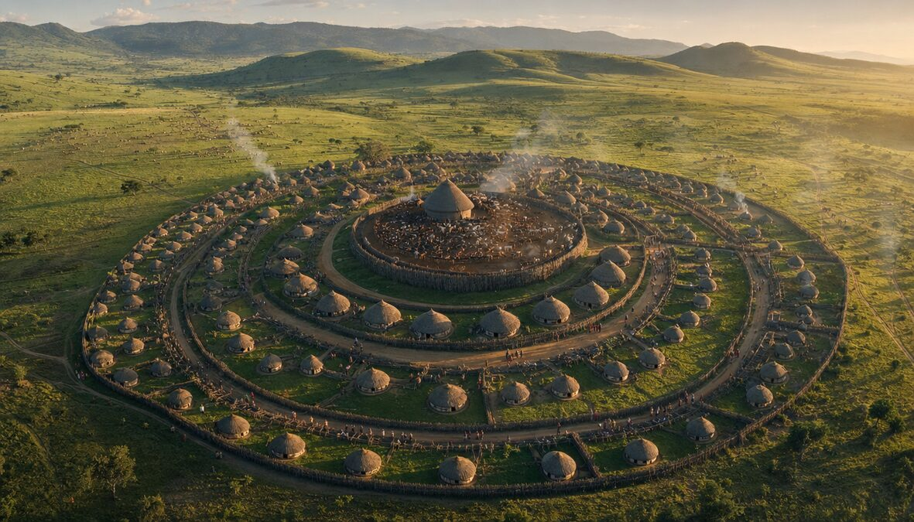
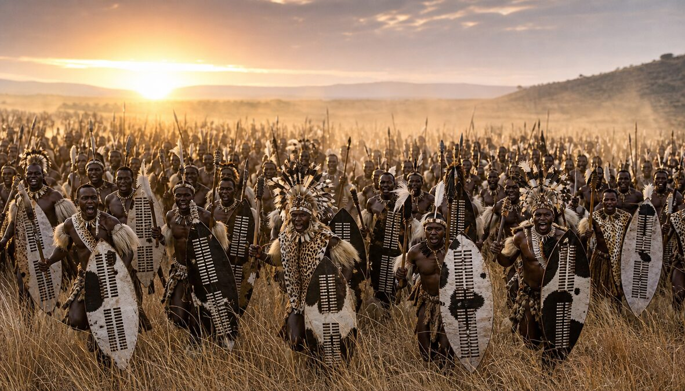
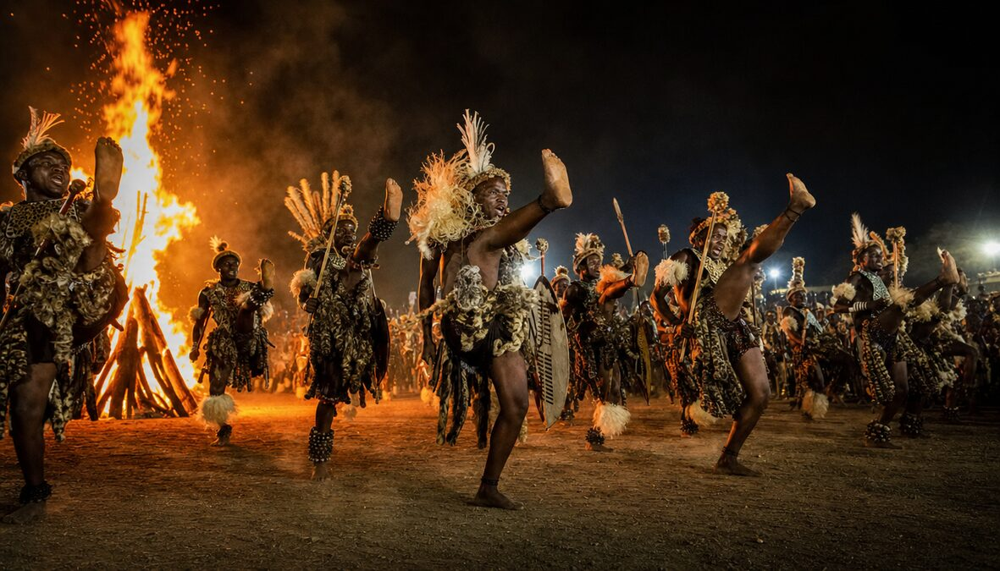
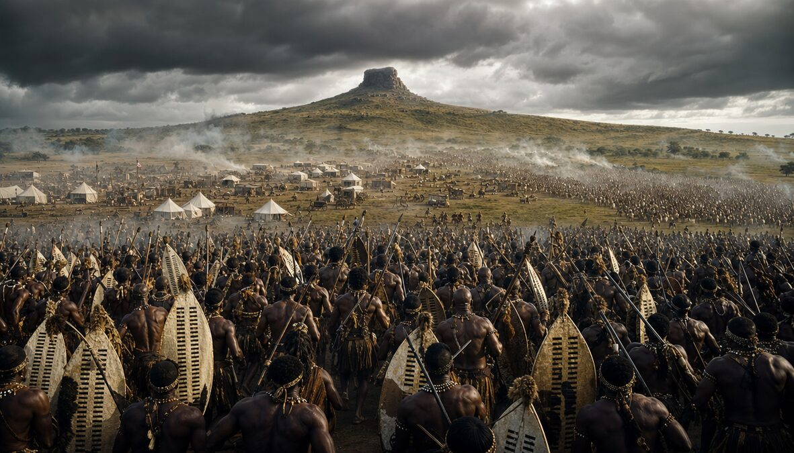
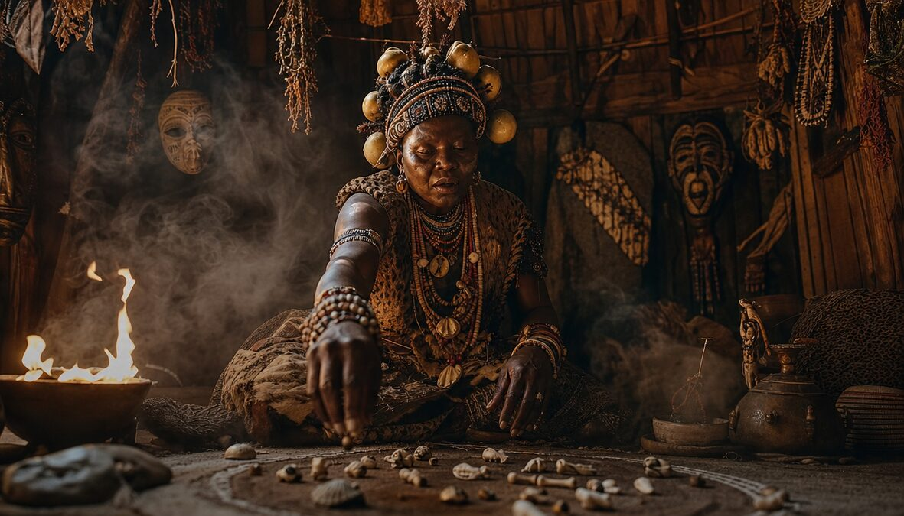

The Nation That Shook an Empire
KwaZulu-Natal · est. ~1709 · Shaka's Reign 1816–1828
Before Shaka, they threw spears from a distance and called it war. Shaka said no. Get close. Stab. Keep the spear. He replaced the long throwing assegai with the short iklwa — named after the sound it makes leaving a body. In 12 years he built a nation of 250,000 warriors, unified 100 clans, and created a military machine that made the British Empire bleed. The Zulu didn't have gunpowder. They didn't need it.





1,400+ huts in concentric circles. The king at the center. 30,000 cattle in the inner ring.
The capital of the Zulu Kingdom. Not a city — a statement. Every hut placed with military precision. The king's isigodlo at the heart, surrounded by regiments arranged by age. You didn't walk in. You were summoned.
"The city is a circle. The king is the center. Everything else is the wall."
Boys entered at 14. Warriors emerged at 19. No one left the same.
Shaka's military academies. Every male between 14 and 40 served in an age-based regiment — the amabutho. They trained barefoot to harden their feet. They ran 80 km in a day. They ate once. The regiment that arrived last at battle didn't eat at all.
"Shoes are for people who plan to run away."
Cattle = currency, status, marriage, religion. A man's worth measured in heads.
The Zulu economy ran on cattle. Lobola (bride-price) paid in cows. Justice settled in cows. Ancestors honored with cattle sacrifice. A kraal without cattle was a kraal without a soul. The king's herds numbered in the tens of thousands.
"Count a man's cattle. Now you know his name."
The iklwa: 45cm blade, 75cm shaft. Short. Lethal. Never thrown.
Zulu blacksmiths forged weapons from iron smelted in clay furnaces. The iklwa was Shaka's revolution — a short stabbing spear designed for close combat. The isihlangu shield was as tall as a man, made from a single cowhide, color-coded by regiment. The knobkerrie club for finishing blows. Three weapons. Zero mercy.
"A spear you throw is a spear you don't have."
The formation that destroyed 1,300 British soldiers at Isandlwana. 22 January 1879.
Shaka's tactical masterpiece. The chest (isiFuba) pins the enemy. Two horns (izimpondo) encircle from the flanks. The loins (umuVa) sit in reserve, backs to the battle so they don't get excited. At Isandlwana, 20,000 Zulu warriors executed this formation against British rifles and artillery. The British camp ceased to exist.
"They had guns. We had geometry."
Sangomas: healers, seers, intermediaries with 300+ medicinal plants.
Spiritual advisors who spoke to the amadlozi (ancestors) through bone-throwing divination. They diagnosed illness, predicted battle outcomes, and sniffed out sorcery. Their word could save or condemn. Training took years — some say the ancestors chose you through illness or dreams. You didn't apply.
"The bones don't lie. The bones don't care."
Warriors kicked higher than their heads. In formation. In unison. For hours.
The Indlamu war dance: high-leg kicks, thunderous foot-stomping, shields crashing in rhythm. Not entertainment — military coordination disguised as ceremony. The Reed Dance (Umhlanga) brought thousands of maidens before the king. The Zulu body was the instrument. The earth was the drum.
"When the ground shakes, it's not an earthquake. It's a rehearsal."
7 colors. Each means something. A love letter you wear.
Zulu beadwork was a language. White = purity/love. Black = marriage/darkness. Red = passion/anger. Blue = faithfulness. Yellow = wealth. Green = jealousy/home. Pink = poverty/promise. A woman's beaded message could propose, reject, or declare war on a man's heart. No words needed.
"She didn't say a word. The beads said everything."
Sorghum beer brewed by women. Shared from one pot. Disputes settled over a drink.
Utshwala — traditional sorghum beer — was the glue of Zulu society. Brewed for three days, served in a communal clay pot, drunk through shared gourds. Court cases heard over beer. Alliances sealed over beer. Ancestors invoked by pouring beer on the ground. The circle was the original boardroom.
"You can't fight a man you just shared a drink with. That's the point."
The Great-Great-One. Creator of all things. Emerged from a reed bed.
Goddess of rain, fertility, and the harvest. The Zulu Demeter.
The ancestor spirits. They watch. They guide. They punish. Never ignore them.
The storm serpent. Tornado dragon. Lives in waterfalls. Commands the lightning.
He-Who-Was-Before. The primordial being. Even the Creator has a Creator.
The Lightning Bird. Strikes the ground. Where it hits, sangomas dig for medicine.
Every male drafted at puberty into age-based regiments. Celibacy enforced until the king granted marriage rights. A regiment of 1,000–2,000 warriors fought, farmed, and died as one unit. Peak strength: 40,000 active warriors.
Shaka's signature. Chest pins. Horns encircle. Loins reserve. Younger warriors on the horns (fastest runners), veterans in the chest (hardest fighters). Communication by runner and hand signal. No retreat. Ever.
Warriors ran barefoot over thorns until their feet were hardened leather. They covered 80 km/day carrying shield, spear, and sleeping mat. Supply lines? The boys (uDibi) carried rations. The army moved faster than mounted cavalry.
20,000 Zulu vs 1,800 British. The British had Martini-Henry rifles, rockets, and artillery. The Zulu had spears, shields, and the bull horn. The Zulu won. 1,300 British dead. The worst British defeat by an indigenous force. Ever.
150 British vs 3,000 Zulu. The British held — barely — behind mealie bags and biscuit boxes. 11 Victoria Crosses awarded. The Zulu had already won the war that morning. This was the aftershock.
The Bull Horn Formation — Military tactics studied at West Point and Sandhurst to this day
Beadwork Language — A complete communication system worn on the body
Age-Regiment System — Social organization that turned a collection of clans into a nation
Indlamu Dance — War dance tradition alive today, performed at every major Zulu event
Ubuntu Philosophy — "I am because we are" — the foundation of communal ethics
Oral History Tradition — Izibongo praise poetry preserving centuries of history without writing
Sangoma Medicine — 300+ medicinal plants, many now validated by modern pharmacology
Proof — That discipline beats technology. Every time.